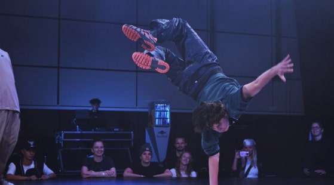
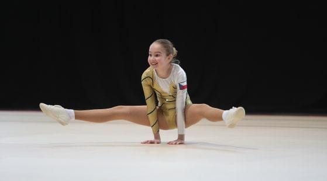
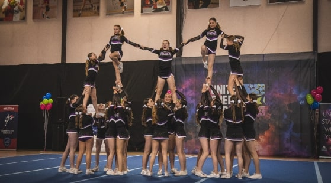

Buď součástí A–stylu
A-STYL začíná svou další sezónu. Staň se jeho součástí a poznej nové kamarády.
Přečti si jaký styl se k tobě hodí
Hip Hop
Je především pro drsňáky. Volné kalhoty velké tričko, jestli tohle zní jako tvůj styl, Hip Hop je pro tebe ideální. Hip Hop není jen styl tance, je to celá kultura. Hip Hopu se táké říká Street Dance, protože vznikl v ulicích Bronxu. Pokud jsi soutěživý a v žilách ti koluje rytmus, Hip Hop je pro tebe!
Aerobik
Aerobik je zábavná a energická forma cvičení, která kombinuje různé rytmické pohyby a taneční kroky, obvykle prováděné s hudbou. Je to skvělý způsob, jak zlepšit fyzickou kondici, posílit svaly a zvýšit celkovou vytrvalost.
Cheerleaders
Cheerleading je energická a týmová aktivita, kde skupina lidí vytváří choreografie, které zahrnují tleskání, skákání, tanec a akrobatické prvky, často na podporu sportovních týmů při zápasech. Tato aktivita je skvělá pro rozvoj fyzické kondice, koordinace a týmové spolupráce.
Contemporary
Contemporary dance, neboli současný tanec, je moderní taneční styl, který kombinuje prvky klasického baletu, moderního tance a jazzu. Je to forma uměleckého vyjádření, která umožňuje tanečníkům vyjadřovat své emoce a příběhy prostřednictvím pohybu. Contemporary tanec zdůrazňuje plynulost a vyjadřovací schopnost těla.
Probuď s námi svůj den
Vyzkoušej si video lekci každého stylu ZDARMA!
VIDEO LEKCE ZDARMAA-styl rozjíždí již 26. sezónu pokud se potřebuješ dozvědět více, klikni na odkaz.
Více informací zde